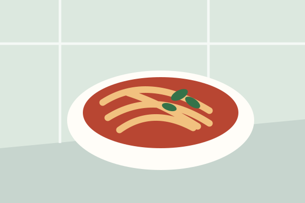
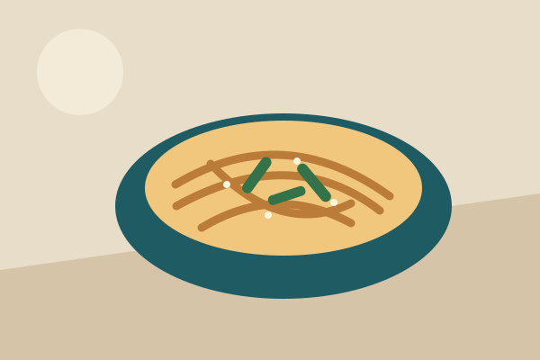
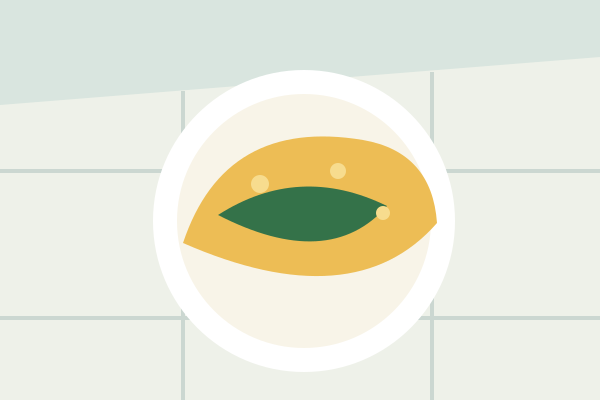
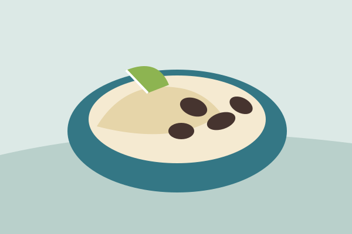
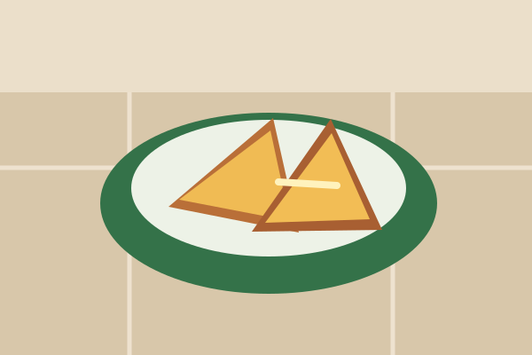
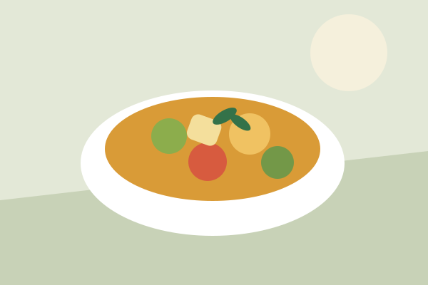

Tomato pasta
ReadyA weeknight tomato sauce with garlic, olive oil, and enough pasta for a quiet dinner or a larger table.
- Spaghetti300 g
- Crushed tomatoes500 g
- Garlic12 g
See what your pantry can make right now.

A weeknight tomato sauce with garlic, olive oil, and enough pasta for a quiet dinner or a larger table.

Chewy noodles dressed with sesame, soy, scallions, and a small spoonful of chili paste.

Soft eggs folded around spinach and cheddar, finished with black pepper.

Cumin-scented black beans over rice with lime and a quick onion topping.

Crisp sourdough with cheddar and a thin swipe of mustard.

A flexible coconut curry built around whatever vegetables are already in the crisper.